도시계획기사 (2003-05-25 기출문제)
1과목: 도시계획론
1. 다음 중 생태학적 접근 시각을 가진 도시학자가 아닌 사람은?
- H. Hoyt
- B. Berry
- David Harvey
- Robert Park
(정답률: 알수없음)

2. 다음 중 도시화율을 바르게 나타낸 것은?
- 전국토 면적 중 도시면적이 차지하는 비율
- 국민총생산액 중 도시지역의 생산액의 비율
- 농촌인구와 도시인구의 비율
- 전국인구 중 도시인구의 비율
(정답률: 알수없음)
3. 다음 인구추정 방식 중 기준년도의 인구와 출생률, 사망률 및 인구이동 등의 변화요인을 고려하는 집단 생잔법을 나타내는 것은?
- Pn = Po(1+rn)
- y = ao+a1χ+a2χ2
- Pn = K/(1 + ea+bn)
- Pt = Po + Bo-t - Do-t + Io-t- Oo-t
(정답률: 알수없음)
4. 생활권의 개념을 가장 잘 나타낸 것은?
- 도시생활의 다양성과 이동성의 범위
- 기본적인 생활시설을 제공하여 자족생활의 기능을 고려한 생활지역
- 도시생활을 하는데 불편이 없는 지역
- 한 도시의 영향을 받고 있는 지역
(정답률: 알수없음)
5. 다음 중에서 도시성장과 행정수요의 변동요인으로 보기 어려운 것은?
- 인구변화
- 소득증대
- 공간구조의 변화
- 교통의 발달
(정답률: 알수없음)
6. 도시 주거지에서 추구해야 하는 환경적 목표는 경제.사회적 특성, 문화와 관습, 그리고 지역여건에 따라 다르게 설정된다. 다음 중 일반적인 주거환경의 목표설정과 관계가 먼 것은?
- 안전성
- 보건성
- 쾌적성
- 경제성
(정답률: 알수없음)
7. 클라센이 주장한 도시화의 단계가 바르게 연결된 것은?
- 집중적 도시화 - 분산적 도시화 - 역도시화
- 분산적 도시화 - 집중적 도시화 - 역도시화
- 분산적 도시화 - 역도시화 - 집중적 도시화
- 집중적 도시화 - 역도시화 - 분산적 도시화
(정답률: 알수없음)
8. 도시사회의 특성이 아닌 것은?
- 외관으로 판단하는 사회
- 기능의 분화가 현저한 사회
- 공동체 의식이 강한 사회
- 경제 활동이 다양한 사회
(정답률: 알수없음)
9. 계획예산제도(PPBS)는 도시계획입안과 예산편성을 효율적으로 결합한 것이다. 다음 사항 중에서 계획예산제도의 설명으로서 옳지 않은 것은?
- 경제행동의 일반원리를 무시하고 정부의 활동 영역에 적용하려는 것이다.
- 목적달성을 위한 여러 대안을 평가 선택한다.
- 행정관리의 도구로서 예산배분의 합리화에 이용한다.
- 분석방법을 예산과 계획의 과정에 적용하는 시스템이다.
(정답률: 알수없음)
10. 다음의 도시기반산업에 대한 설명으로 가장 적합하지않은 것은?
- 도시에 외형적 성장을 가져오게 하는 산업이다.
- 재화와 용역을 도시경제권 밖으로 수출하는 활동이다
- 외부로부터 온 소비자들에게 재화와 용역을 판매하는 활동이다.
- 도시 내부의 수요 충족을 위한 재화와 용역을 공급하는 활동이다.
(정답률: 알수없음)
11. 다음 중 단일도심 도시(monocentric city)의 균형공간 구조의 특징이 아닌 것은?
- 도심으로 들어올수록 상주인구의 인구밀도가 상대적으로 하락한다.
- 도심근처에 고층건물이 집중하고 외곽의 건물높이가 낮아진다.
- 외곽지역에서는 토지를 많이 사용하고 건축자재를 덜 사용한다.
- 외곽으로 나갈수록 1인당 주거서비스의 소비량이 증가한다.
(정답률: 알수없음)
12. 통행발생 및 통행배분단계에서 추정된 존(zone)별 통행유출, 유입량 또는 존간 교차통행량을 통행수단별로 분할하는 과정을 주로 다루는 모형을 무엇이라고 하는가?
- 통합수요모형 (combined demand models)
- 수단분담모형 (modal split models)
- 통행발생모형 (trip generation models)
- 경로선택모형 (route choice models)
(정답률: 알수없음)
13. 다음과 같은 가상도시의 주택관련 자료를 이용하여, 그 도시의 20⑤년도 주택보급률을 추정하면 얼마인가?
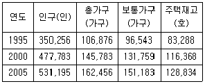
- 79.3%
- 85.2%
- 90.3%
- 93.0%
(정답률: 알수없음)
14. 도시공간구조이론 중 도시발생초기의 전형적인 단핵구조를 설명하고 있는 이론은?
- 도시생태이론
- 동심원이론
- 다핵이론
- 중심지이론
(정답률: 알수없음)
15. 문화적, 역사적으로 보전이 필요한 건축물이나 기념물이 많은 지구에 적용되는 재개발방식은?
- 전면재개발
- 수복재개발
- 보전재개발
- 도심지재개발
(정답률: 알수없음)
16. 인구의 도시집중 원인과 거리가 먼 것은?
- 도농간의 불균형성장에 따른 지역간 소득격차
- 농촌에 비하여 상대적으로 높은 외부경제 또는 집적의 이익
- 고용기회의 다양성
- 쾌적한 환경에 대한 동경
(정답률: 알수없음)
17. 도시공간의 구성요소로 움직임, 교통망, 결절, 계층, 영향면을 들고 있는 학자는?
- 나이스투엔(J. Nystuen)
- 하겟(P. Hagget)
- 모릴(R. Morrill)
- 자넬(D. Janelle)
(정답률: 알수없음)
18. 다음 중 독자적이고 품격이 있는 도시를 만들어 매력 있는 도시를 창조하고자 하는 도시관리 방식과 관련이 있는 것은?
- 문화지향적 도시관리
- 시민참여적 도시관리
- 민영화 방식의 도시관리
- 제3섹터
(정답률: 알수없음)
19. 다음 중에서 도시화가 됨에 따라 나타나는 속성이 아닌것은?
- 합리성
- 유기적 연대
- 민속사회
- 계약관계
(정답률: 알수없음)
20. 지형조건이 평탄하여 성장에 장애가 없는 도시에 적합한 도시공간 구성방식은?
- 격자형
- 방사환상
- 대상
- 파상
(정답률: 알수없음)
2과목: 도시설계 및 단지계획
21. 어떤 주택단지의 토지이용 비율은 주택용지율 70%, 교통 용지율 15%, 공원녹지등 기타 용지율 15% 이다. 이 주택단지의 총 인구밀도를 175인/ha로 계획한다면 주택용지에 대한 순인구 밀도는?
- 140인/ha
- 175인/ha
- 200인/ha
- 250인/ha
(정답률: 알수없음)
22. 도시계획에서 생활주기(life style)란 용어에 알맞는 뜻은?
- 주.야간 생활패턴에 따른 신체 리듬을 표현하는 용어
- 인간공학(Human scale)의 책정 기초 단위에서 사용하는 용어
- 시민의 일상적 활동주기(activity cycle)란 뜻으로 사용하는 용어
- 공동생활(community)의 종류를 구분할 때 사용하는 용어
(정답률: 알수없음)
23. 주거단지내에 건물을 배치할 때 일반적으로 고려해야할 사항이 아닌 것은?
- 공간의 영역성
- 공간의 변화성
- 경관의 독립성
- 경관의 연속성
(정답률: 알수없음)
24. 십(+)자형의 가로 교차점에서의 차량 충돌점의 갯수는?
- 4개소
- 8개소
- 12개소
- 16개소
(정답률: 알수없음)
25. 단지계획에서 대가구(super block)을 만드는 가장 큰 이유는?
- 편익시설에 접근하기 좋도록
- 토지의 효율성을 높이기 위하여
- 합리적인 공공시설 배치를 위하여
- 통과 교통을 배제하기 위하여
(정답률: 알수없음)
26. 재건축에 따른 주거단지 개발요건과 가장 거리가 먼 것은?
- 건물이 훼손되거나 일부가 멸실되어 도괴 기타 안전사고의 우려가 있는 주택
- 도시미관,토지이용도,난방방식,구조적 결함 또는 부실시공 등으로 인하여 재건축이 불가피하다고 관할 지자체장이 인정하는 주택
- 건물 준공 후 30년 이상 경과되어 관리수선비가 과다하게 발생하는 주택
- 재건축으로 인한 토지이용상의 현저한 효용의 증대가 예상되는 주택
(정답률: 알수없음)
27. 공동주택의 배치시 도로 및 주차장의 경계선으로부터 공동주택의 외벽까지 띄어야 하는 법규상 최소거리는?
- 1미터
- 2미터
- 3미터
- 5미터
(정답률: 알수없음)
28. 주거단지의 단지계획 목표설정시 고려하여야 할 일반적인 사항과 거리가 먼 것은?
- 위생, 구조적 안전, 문화적 요소를 수용하는 정신적, 육체적 건강을 고려하도록 한다.
- 자연적 지형을 이용하여 토지이용의 효율성 제고와 개발비용의 최소화를 도모하도록 한다.
- 동일계층을 대상으로 규모, 양식 등 통일적인 공간 구성으로 동질적 지역의식을 형성토록 한다.
- 어린이 놀이터를 둘 만한 공지가 확보되어야 하고 이용자의 행동권내에 편의시설을 설치토록 한다.
(정답률: 알수없음)
29. 단지 분석 방향에 대한 기술 중 옳은 것은?
- 단지 내부 요소들은 개발에 직접적인 영향을 주며 계획가에 의해 조정될 수 있다.
- 단지 외부 요소들도 단지에 직접적인 영향을 주며 계획가에 의한 조정이 용이하다.
- 단지 분석시는 현장답사, 자원조사, 자료 종합의 3 단계를 거쳐 유용한 자료수집을 한다.
- 단지의 분석은 단지 내부와 단지 외부정보의 구분을 두지 않고 하여야 한다.
(정답률: 알수없음)
30. 단지계획시 주택지계획에 관한 사항 중 가장 부적합한 사항은?
- 바람직한 가구의 구성은 단변 30 ~ 50미터, 장변 130 ~ 160미터이다
- 구획도로의 패턴은 쿨데삭형, 루프형, T자형, 격자형으로 나눈다.
- 남측의 획지는 동서폭을 넓힌다.
- 간선도로변에 시설녹지가 설치되는 경우에는 획지를 1켜로 배치하여 이면도로에서 접근되도록 한다.
(정답률: 알수없음)
31. 일반적으로 사용되는 상업용지의 면적 산정 방법이 아닌것은?
- 이용인구에 의한 방법
- 원단위에 의한 방법
- 상정인구밀도에 의한 방법
- 상업기능에 의한 방법
(정답률: 알수없음)
32. 다음 중 공업지역의 적지조건에 해당되지 않은 것은?
- 교통,용수,노동력의 편의를 얻을 수 있는 지역
- 평탄하고 지가가 저렴하며 넓은 지역
- 근린주구와 연속된 지역
- 바람이 불어오는 반대방향 또는 쓰레기 처리가 용이한 지역
(정답률: 알수없음)
33. 경사지에 주택을 배치하는 원칙으로 틀린 것은?
- 건물의 길이 방향이 등고선에 따르도록 한다.
- 연속적인 바닥면을 가진 긴 건물은 적당히 단차를 두는 것이 효율적이다.
- 접근 도로는 등고선에 직각으로 배치하는 것이 효율적이다.
- 건물간의 상호관계, 미적 요소를 고려하여 배치한다.
(정답률: 알수없음)
34. 근린주구 규모 주택단지의 중심 시설은?
- 행정시설
- 초등학교
- 도매시장
- 교통광장
(정답률: 알수없음)
35. 페리(C.A.Perry)의 근린주구 구성요소에 해당하지 않은 것은?
- 규모(size)
- 오픈스페이스(open space)
- 근린점포(shopping district)
- 랜드마크(landmark)
(정답률: 알수없음)
36. 도로의 배치간격에서 주간선도로간 간격은 얼마정도가 적당한가?
- 250m
- 500m
- 1Km
- 2Km
(정답률: 알수없음)
37. 단지 자료간(間) 교차분석의 최우선적인 필요성은?
- 토지이용적합성
- 환경영향평가
- 중요요인 판별
- 분석구조 설계
(정답률: 알수없음)
38. 단지계획시 소음공해를 적게 하는 가장 유효한 방법은?
- 소리의 음원에서 풍하 지역일 것
- 소리가 음원에서 이동하는데 소리의 확장을 약화시키는 것
- 소리의 음원에서 이동하는데 소리의 확장을 강화 시키는 것
- 소리의 음원에서 풍상지역일 것
(정답률: 알수없음)
39. 단지(團地)에 대한 가장 올바른 정의는?
- 동질적 용도의 통합된 단일 토지
- 이질적 용도의 통합된 단일 토지
- 동질적 용도의 분산된 여러 토지
- 이질적 용도의 분산된 여러 토지
(정답률: 알수없음)
40. 단지내에서 보통의 대화가 가능한 소음의 정도는?
- 30dB 이내
- 50dB 이내
- 70dB 이내
- 90dB 이내
(정답률: 알수없음)
3과목: 도시개발론
41. 항공사진에 관한 표정(Orientation)의 종류가 아닌 것은?
- 절대표정(absolute orientation)
- 상호표정(relative orientation)
- 내부표정(inner orientation)
- 정밀표정(accuracy orientation)
(정답률: 알수없음)
42. 삼각측량에 있어서 삼각점의 수평위치는 무엇으로 정하는 가?
- 거리와 방향각
- 고저차와 방향각
- 밀도와 폐비
- 폐합오차와 밀도
(정답률: 알수없음)
43. 지표면에서 강철테이프를 사용하여 거리를 측정할 때의 보정사항이다. 이 중에서 항상 음(-)의 보정량을 갖는 것은 어느 것인가?
- 표준척 보정
- 온도 보정
- 장력 보정
- 평균해수면 보정
(정답률: 알수없음)
44. 삼각점 A에 기계를 설치하여 삼각점 B를 시준하여 각 T를 관측하고자 하였으나 장애물로 인해 B로부터 e만큼 떨어진 위치의 점 P를 관측하여 T '=60° 30′ 를 얻었다. 보정한 각T 를 구하시오. (단, S=2km, e=5m, φ =310° 20′ )
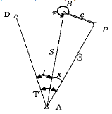
- 60° 26′ 27˝
- 60° 23′ 27″
- 61° 26′ 27″
- 61° 23′ 27″
(정답률: 알수없음)
45. 거리를 측정할 때에 발생하는 오차 중에서 정오차가 아닌것은?
- 온도의 변화에 의한 오차
- 눈금을 잘못 읽었을 때, 발생하는 오차
- 테이프의 눈금이 잘못되어 발생하는 오차
- 테이프의 처짐(sag)으로 발생하는 오차
(정답률: 알수없음)
46. 노선측량에 있어서 곡선 반경 700m 되는 원곡선 상을 90㎞/h 로 주행하려면 칸트(cant)는 얼마인가?(단, 궤간(b)는 1.472m 임)
- 14.4㎜
- 73.4㎜
- 114㎜
- 134㎜
(정답률: 알수없음)
47. 그림과 같이 수평거리 50m, 앨리데이드 경사 분획이 +7, 측표의 높이 3m, 기계높이 1.5m일 때 B점의 표고는 ? (단, A점의 표고는 100m이다.)
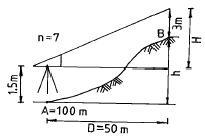
- 102.0m
- 103.0m
- 101.5m
- 102.5m
(정답률: 알수없음)
48. 다음 중 UTM 좌표계에 관하여 잘못 설명한 것은?
- 각 종대는 180° W 자오선에서 서쪽으로 6° 씩 간격으로 1부터 60까지 번호를 붙인다.
- 위도는 남· 북위 80° 까지만 포함한다.
- UTM은 적도를 횡축, 자오선을 종축으로 한다.
- 위도는 8° 간격으로 나누어 알파벳 문자로 표시한다.
(정답률: 알수없음)
49. 직육면체인 저수탱크의 용적을 구하고자 한다. 밑변 a, b와 높이 h에 대한 측정결과가 다음와 같을 때 용적오차는 얼마인가?
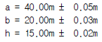
- ± 7 m3
- ± 21 m3
- ± 28 m3
- ± 49 m3
(정답률: 알수없음)
50. 평지에서 A점에 평판을 세우고 B점의 표척(상하간격 3m)을 보통 앨리데이드로 시준하여 상 6.5, 하 2.5의 눈금을 읽었다. A, B 사이의 거리는 얼마인가?
- 6.5 m
- 7.5 m
- 65 m
- 75 m
(정답률: 알수없음)
51. 다음 등고선의 성질 중 옳지 않은 것은?
- 등고선은 분기하지 않고 절벽 이외에는 교차하지 않는다.
- 동일 등고선 상의 모든 점은 기준면상 같은 높이에 있다.
- 등고선은 하천, 호수, 계곡 등에서는 단절되고 도상에서 폐합하는 일이 없다.
- 등고선은 최대 경사선에 직각이 되고 부수선 및 계곡선에 직교한다.
(정답률: 알수없음)
52. 지형공간정보체계의 자료처리 흐름에서 자료처리 과정에 포함되지 않는 것은?
- 부호화
- 모형화
- 중첩, 분해
- 통계해석
(정답률: 알수없음)
53. 다음 기고식 야장에서 측점 4의 지반고는 얼마인가?
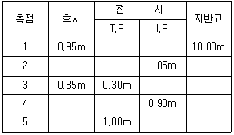
- 9.90m
- 10.00m
- 10.10m
- 10.65m
(정답률: 알수없음)
54. 다음중 수치영상개선(enhancement)방법이 아닌 것은?
- 영상연화(image smoothing)
- 영상첨예화(image sharpening)
- 영상합성(image composite)
- 의사색을 이용한 영상처리(pseudo-color image processing)
(정답률: 알수없음)
55. 주로 지역내의 지성선 위치 및 그 위의 각점 표고를 실측도시하여 이것을 기초로 현지에서 지형을 관찰하면서 적당하게 등고선을 삽입하는 방법으로 비교적 소축척 산지에 이용되는 방법은?
- 횡단점법
- 기준점법
- 좌표점법
- 종단점법
(정답률: 알수없음)
56. 평지에서 8km 떨어진 두 삼각점 사이를 관측하기 위하여 세워야 되는 측표의 최소높이는 ? (단, 지구의 반경 = 6,370km)
- 2m
- 5m
- 7m
- 9m
(정답률: 알수없음)
57. 축척 1:5,000 국가기본도상에서 그림과 같이 주곡선상의 두점 A,B 사이의 도상거리가 2cm인 경우 이 두점사이의 실제경사는?
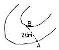
- 1%
- 5%
- 10%
- 25%
(정답률: 알수없음)
58. 평판측량에서 축척 1/1,000의 도면을 작성할 때 도상의 점위치의 허용오차를 0.2㎜라 하면 측점의 구심오차 허용 한계는?
- 8㎝
- 10㎝
- 12㎝
- 14㎝
(정답률: 알수없음)
59. 다음 중 지형 자료에 대한 공간분석 방법의 연결로 옳은 것은?
- 점(占) ― 최근린 방법, 쿼드랫 방법
- 선(線) ― 형상관측, 공간적 상호작용
- 면(面) ― 쿼드랫 방법, 공간적 자동상관관계
- 선(線) ― 최근린 방법, 망분석과 도표이론 방법
(정답률: 알수없음)
60. 스타디아 측량에서 높이(H)를 구하는 공식은 ? (단, K, C:스타디아 정수, ℓ :협장)
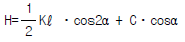
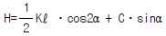
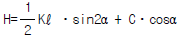
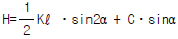
(정답률: 알수없음)
4과목: 국토 및 지역계획
61. 다음 중 로렌츠(Lorenz)곡선을 이용한 지역소득격차 측정 방법은?
- 평균 편차
- 표준 편차
- 지니 계수
- 변이 계수
(정답률: 알수없음)
62. 다음 중 지역계획의 특징으로 적합하지 않은 것은?
- 계획체계(planning system)와 계획대상(planning object)사이의 상호작용
- 청사진식 계획(blueprint planning)으로 구상 제시
- 과정지향성(process oriented)
- 환류(feedback)
(정답률: 알수없음)
63. 클라센(L.Klaassen)이 구분한 발전 도상 저개발지역 (underdeveloped region in expansion)에 해당하는 것은?
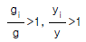
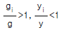
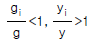
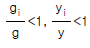
(정답률: 알수없음)
64. 안스타인(S. Arnstein)의 8단계 주민참여 과정에서 주민권리(degress of citizen power)가 아닌 것은?
- 주민통제 (citizen control)
- 권리 위임 (delegated power)
- 협동관계 (partnership)
- 상담 (consultation)
(정답률: 알수없음)
65. 다음 중 환경기준 설정 용도지역제(performance zoning)에서 개발을 허용 혹은 규제하기 위해 기초로 제시하고 있는 변수에 해당되지 않는 것은?
- 이용빈도수(using frequency ratio)
- 공지율(impervious surface ratio)
- 밀도(density)
- 용적률
(정답률: 알수없음)
66. 다음 중 하향식(Top Down) 개발 논리에 속하는 것은?
- 생태중심개발(eco-development)
- 기본수요접근(Basic Needs)
- 성장거점이론(growth center theory)
- 도농통합개발(agropolitan approach)
(정답률: 알수없음)
67. 지역계획의 형성배경으로 적당치 않은 것은?
- 지역적 문제의 심각성을 인식하고 개선코져 했던 계획적 노력과 이론적 발전
- 산업화 및 도시화에 따른 지역의 기능적인 문제 발생
- 지역주의 또는 지방주의에 부응하는 지역계획에 대한 요구 증대
- 고도 경제성장에서 발생한 산업간 성장 격차
(정답률: 알수없음)
68. 지역계획의 수립과정에 있어 다음의 여러 지표가운데 제일 우선하여야할 것은?
- 고용지표
- 토지이용지표
- 인구지표
- 재정지표
(정답률: 알수없음)
69. 국토 및 지역계획의 상호관계가 잘못 기술된 것은?
- 도종합계획은 지역계획의 상위계획이다.
- 도종합계획은 국토계획과 시군계획의 중간적 조정계획이다.
- 지역계획은 국토종합계획의 하위계획이다.
- 시.군종합계획은 도종합계획의 하위계획이다.
(정답률: 알수없음)
70. 아래에 언급한 나라 가운데 국토계획제도를 갖고 있지 않는 나라는?
- 한국
- 일본
- 프랑스
- 미국
(정답률: 알수없음)
71. 크리스탈러(Christaller)의 중심지 이론에서 중심지를 둘러싼 거래지역(Trading area)의 외적 경계는 일반적으로 어떠한 형태인가?
- 원
- 8각형
- 6각형
- 3각형
(정답률: 알수없음)
72. 도시 순위 규모 법칙에서 말하는 q 값이 10년전 1.0 에서 현지 2.0으로 증가한 어느 나라의 도시체계의 특징에 관한 설명으로서 적절한 것은?
- 10년 전에는 동위 순위 규모 분포를 이루지 못했으나 현재는 근접하고 있다.
- 10년전에는 인구가 균형을 이루었으나, 현재는 도시 지역인구가 농촌지역의 2배로 되었다.
- 10년전보다 수위도시 또는 소수의 몇몇 대도시에 인구가 더욱 많이 집중하였다.
- 10년 전보다 도시화 속도가 2배 증가하였다.
(정답률: 알수없음)
73. 공업입지가 지역의 중심지 일원에 집중되는 성향을 촉진시키는 인자에 해당되지 않는 것은?
- 높은 쇄신(innovation)
- 집적경제의 효과
- 양호한 교통시설
- 생태환경의 가치
(정답률: 알수없음)
74. 국토 및 지역계획의 공간단위로서 지역획정에 있어서 동질성의 원칙과 관계없는 것은?
- 부드빌(Boudeville)
- 요인분석법
- 누스(Nourse)
- 베리(Berry)
(정답률: 알수없음)
75. 어느 지역의 한계사회비용이 100만원이고, 한계사회편익이 90만원이라면 이 지역은 다음 중 어느 지역에 속하는 가?
- 과밀지역
- 중간지역
- 낙후지역
- 침체지역
(정답률: 알수없음)
76. 제4차 국토종합계획에서 국토 축별 발전 전략의 설명으로 가장 옳은 것은?
- 동해축 : 국제물류· 관광· 산업특산화지대로 육성
- 환남해축 : 환남해권 국제관광 및 기간산업의 고도화
- 중부내륙축 : 중국의 성장에 대응하는 신산업지대망조성
- 서울· 부산축 : 산업구조개편 및 정비기반 구축
(정답률: 알수없음)
77. 전국 및 A지역에서의 산업별 종사자수를 나타내는 아래의 표를 토대로하여 A지역에서의 제조업에 대한 입지상(location quotient)을 계산하면 얼마인가?
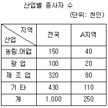
- 0.25
- 0.32
- 0.50
- 1.00
(정답률: 알수없음)
78. 다음 중 지역계획의 이론으로서 그 발생시기가 빠른 순으로 나열된 것은?
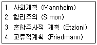
- 1 - 4 - 3 - 2
- 3 - 1 - 4 - 2
- 1 - 2 - 3 - 4
- 1 - 3 - 2 - 4
(정답률: 알수없음)
79. 도시 및 지역개발의 이론과 실천분야에 있어서 선구적 나라는?
- 미국
- 영국
- 일본
- 프랑스
(정답률: 알수없음)
80. 지역개발계획 수립 절차의 순서가 알맞은 것은?
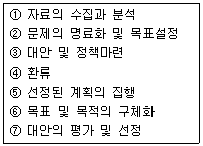
- ② - ⑥ - ① - ③ - ⑦ - ⑤ - ④
- ② - ① - ⑥ - ③ - ⑦ - ⑤ - ④
- ② - ① - ⑥ - ③ - ⑦ - ④ - ⑤
- ① - ② - ⑥ - ③ - ⑦ - ④ - ⑤
(정답률: 알수없음)
5과목: 도시계획관계법규
81. 국토의계획및이용에관한법률에서 개발행위허가를 받지 않아도 되는 경미한 행위가 아닌 것은?
- 공작물의 설치: 도시지역에서 무게 50t이하, 부피 50m3이하,수평투영면적이 25m2이하
- 토지의 형질변경: 높이 50㎝이내 또는 깊이 50㎝이내의 절토,성토,정지
- 토석 채취: 지구단위계획구역에서 면적50m2이하인 토지에서 부피 50m3이하
- 물건을 쌓아 놓은 행위: 녹지지역에 쌓아 놓은 면적이 25m2이하인 토지에 전체 무게 50t이하, 전체 부피 50m3이하
(정답률: 알수없음)
82. 도시공원 시설 중 유희시설에 해당되지 않는 것은?
- 그네
- 미끄럼틀
- 모래사장
- 야외음악당
(정답률: 알수없음)
83. 주택건설촉진법에 관한 내용으로 올바른 것은?
- 주택건설촉진법의 목적은 주택의 건설과 공급 그리고 주택관리 및 유지보수에 필요한 사항을 규정하고자 하는 것이다.
- 국가는 국민의 주거생활의 안정과 향상을 보장하기 위하여 필요한 시책을 종합적으로 계획· 실시하여야 한다.
- 주택난 해소를 위해 주택건설종합계획에는 다량의 주택건설이 최우선적으로 고려되어야 한다.
- 주택건설종합계획의 수립 기타 중요 사항을 심의하게 하기 위하여 건설주택위원회를 둔다.
(정답률: 알수없음)
84. 다음 중 제2종 지구단위계획구역으로 지정할 수 있는 것은?
- 용도지역의 지정.변경에 관한 도시관리계획을 입안하기 위하여 열람 공고된 지역
- 기반시설부담구역
- 지하및 공중공간을 효율적으로 개발하고자 하는 지역
- 계획관리지역으로서 공동주택의 건설계획이 포함된 면적이 30만제곱미터 이상인 지역
(정답률: 알수없음)
85. 도시재개발법상 물상 대위와 관계 있는 권리는?
- 지상권
- 전세권
- 저당권
- 임차권
(정답률: 알수없음)
86. 건축법에서 단독주택의 경우 바닥으로부터 지표면까지의 평균높이가 당해 층높이의 얼마 이상이면 지하층으로 보는가?
- 1/2
- 1/3
- 1/4
- 1/5
(정답률: 알수없음)
87. 설치된 부설주차장의 용도를 변경할 수 있는 경우가 아닌것은?
- 인근 300m이내에 새로운 부지를 마련하여 주차장을 옮기는 경우
- 시설물의 내부 또는 부지안에서 주차장의 위치를 변경하는 경우
- 부설주차장 설치 기준을 초과하여 설치한 주차장 부분에 대하여 시장, 군수의 확인을 받은 경우
- 도로교통법의 규정에 의한 차량통행이 금지되어 당해 주차장의 이용이 사실상 불가능한 경우
(정답률: 알수없음)
88. 일부 공공시설의 지하에 로외주차장을 설치하고자하는 경우, 도시계획시설사업의 실시계획인가를 받은 때에는 로외주차장으로 사용되는 토지에 대한 점용료를 감면할 수 있도록 하고 있는데 이 때의 공공시설에 해당하지 않는 것은?
- 공항
- 운동장
- 공용의 청사
- 도로
(정답률: 알수없음)
89. 도시지역에서 막다른 도로는 소방활동을 위해서 그 길이에 대하여 일정한 너비 이상으로 건축법에서 규정 하고 있는데 막다른 도로의 길이가 35m일 경우 도로의 너비는 얼마이상으로 하여야 하는가?
- 2m 이상
- 4m 이상
- 6m 이상
- 10m 이상
(정답률: 알수없음)
90. 건설교통부장관이나 시도지사가 용도지구를 도시관리계획결정으로 세분하여 지정할 수 없는 것은?
- 보존지구
- 개발진흥지구
- 방재지구
- 경관지구
(정답률: 알수없음)
91. 도시공원법 및 국토의계획및이용에관한법률상 녹지에 대한 설명으로 틀린 것은?
- 각종 사고나 자연재해 등 방지를 위하여 설치하는 녹지를 방재녹지라 한다.
- 대기오염, 소음 진동, 악취 등의 공해를 방지하기 위하여 설치하는 녹지를 완충녹지라 한다.
- 도시의 자연적 환경을 보전하거나 개선하기 위하여 설치하는 녹지를 경관녹지라 한다.
- 녹지는 국토의계획및이용에관한법률상 도시기반시설에 포함된다.
(정답률: 알수없음)
92. 개발제한구역내에서 허용되지 않는 시설 및 행위는?
- 주택의 신축
- 병원
- 골프장
- 자동차용 액화석유가스 충전소
(정답률: 알수없음)
93. 주택사업계획은 건강하고 문화적인 주거생활을 영위하는 데 적합하도록 작성되어야 하며 그 사업계획에는 부대시설 및 복리시설의 설치에 관한 계획이 포함되어야 한다. 다음 중 복리시설에 포함되지 않는 것은?
- 어린이놀이터
- 관리사무소
- 입주자집회소
- 주민운동시설
(정답률: 알수없음)
94. 환지방식에 의한 도시개발법에 있어서 청산금의 소멸 시효는?
- 1년
- 3년
- 5년
- 10년
(정답률: 알수없음)
95. 수도권 과밀부담금에 대한 설명 중 틀린 것은?
- 과밀억제권역 또는 성장관리권역에서 인구집중유발 시설 중 업무용건축물· 판매용건축물· 공공청사 기타 대통령령이 정하는 건축물을 건축하고자 하는 자는 과밀부담금을 납부하여야 한다.
- 과밀부담금의 부과 징수에 대하여 이의가 있는 자는 토지수용법에 의한 중앙토지수용위원회에 행정심판을 청구할 수 있다.
- 도시재개발법에 의한 도심재개발사업에 따른 건축물에 대하여는 대통령령이 정하는 바에 따라 과밀부담금을 감면할 수 있다.
- 부담금은 건축비의 100분의 10을 원칙으로 한다.
(정답률: 알수없음)
96. 다음 중 택지개발예정지구 지정에 대한 설명이 옳은 것은?
- 택지개발예정지구 지정권자는 건설교통부장관이나 30만제곱미터 미만인 예정지구는 시얇도지사가 지정할 수 있다.
- 택지개발예정지구 지정한 날로부터 3년이내에 택지개발계획의 승인 신청을 하지 아니한 때는 지구지정 효력을 상실한다.
- 택지개발계획 승인된 날로부터 5년 이내에 택지개발 사업실시계획의 승인 신청을 하지 아니한 때는 지구지정 효력을 상실한다.
- 면적이 330만제곱미터 미만의 예정지구 면적을 축소 또는 해제할 경우에는 주택정책심의위원회의 심의를 생략할 수 있다.
(정답률: 알수없음)
97. 도시재개발법상 관리처분계획의 기준에 가장 알맞는 것은?
- 관리처분계획 중 분양설계는 분양신청기간 개시일을 기준으로 수립한다.
- 과소한 토지 또는 건축물과 재개발구역지정 후 분할된 토지를 취득한 자에 대하여는 현금으로 보상할 수 있다.
- 관리처분계획은 종전의 토지 또는 건축물의 위치를 기준으로 수립한다.
- 관리처분계획의 내용, 관리처분의 방법, 기준, 재산의 평가는 대통령령이 정하는 기준에 따라 전국적으로 동일하게 시행하여야 한다.
(정답률: 알수없음)
98. 도시개발사업에서 환지계획에 정할 사항으로 틀린 것은?
- 환지설계
- 필지별로된 환지명세
- 필지별과 권리별로 된 청산대상토지 명세
- 축척 1/1000의 환지예정지도
(정답률: 알수없음)
99. 인구집중 유발시설인 연수시설에 대한 수도권정비계획법 상의 규제 내용 설명 중 맞는 것은?
- 수도권내에서 연수시설의 신축 또는 증축은 금지되어 있음
- 과밀억제권역안의 기존 연수시설은 100분의 20범위 안에서 증축을 허용
- 성장관리권역에서 연수시설은 수도권정비위원회 심의를 거쳐 신축이 가능
- 자연보전권역에서는 수도권정비위원회의 심의를 거쳐 연수시설을 신축 할 수 있음
(정답률: 알수없음)
100. 도시계획시설사업 시행자가 타인이 점유하는 토지에 출입하고자 할 때에는 시장 또는 군수의 허가를 받아 출입한 날의 며칠 전에 당해 토지의 소유자 또는 점유자나 관리인에게 그 일시와 장소를 통지하여야 하는가?
- 15일
- 7일
- 5일
- 3일
(정답률: 알수없음)